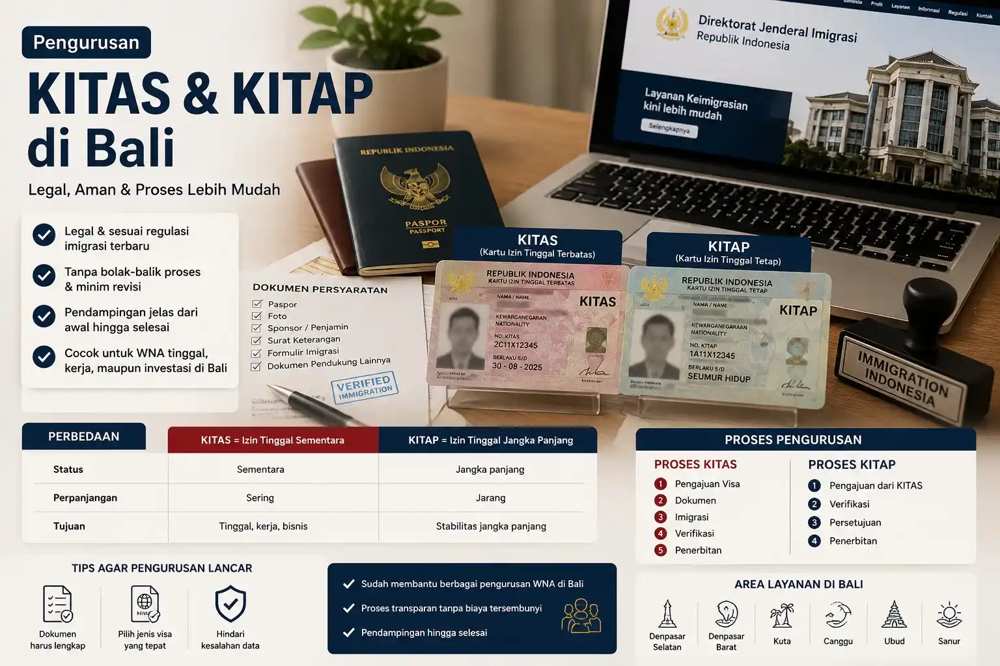

Ingin tinggal di Bali secara legal dengan proses yang lebih jelas, terarah, dan mudah dipahami?
Dengan prosedur yang tepat, pengurusan KITAS dan KITAP sebenarnya bisa dilakukan lebih cepat, aman, dan tanpa kesalahan yang sering terjadi pada pengajuan mandiri. Memahami alur sejak awal adalah kunci agar proses berjalan lancar tanpa hambatan.

KITAS (Kartu Izin Tinggal Terbatas) adalah izin resmi bagi WNA untuk tinggal di Indonesia dalam jangka waktu tertentu.
Dengan KITAS, Anda mendapatkan kemudahan dalam administrasi seperti rekening bank, pajak, hingga aktivitas kerja atau bisnis di Indonesia.
KITAP (Kartu Izin Tinggal Tetap) adalah izin tinggal jangka panjang yang memberikan stabilitas lebih bagi WNA.
| Aspek | KITAS | KITAP |
|---|---|---|
| Status | Sementara | Jangka panjang |
| Perpanjangan | Sering | Jarang |
| Tahapan | Penjelasan |
|---|---|
| Pengajuan Visa | Menentukan jenis visa sesuai kebutuhan. |
| Dokumen | Melengkapi seluruh persyaratan. |
| Imigrasi | Pengajuan ke kantor imigrasi. |
| Verifikasi | Pemeriksaan data oleh petugas. |
| Penerbitan | KITAS diterbitkan. |
| Tahapan | Penjelasan |
|---|---|
| Pengajuan | Dari KITAS sebelumnya. |
| Verifikasi | Pengecekan dokumen. |
| Persetujuan | Disetujui imigrasi. |
| Penerbitan | KITAP diterbitkan. |
| Wilayah | Keyword SEO |
|---|---|
| Denpasar Selatan | Pengurusan KITAS Denpasar Selatan |
| Denpasar Barat | Pengurusan KITAS Denpasar Barat |
| Kuta | Pengurusan KITAS Kuta |
| Canggu | Pengurusan KITAS Canggu |
| Ubud | Pengurusan KITAS Ubud |
| Sanur | Pengurusan KITAS Sanur |
Gunakan layanan dari Rizch Service untuk proses yang lebih aman, cepat, dan minim risiko kesalahan.
Ya, untuk tinggal lebih lama di Indonesia.
Tergantung jenis dan dokumen.
Sangat disarankan menggunakan jasa profesional.
Konsultasi Gratis